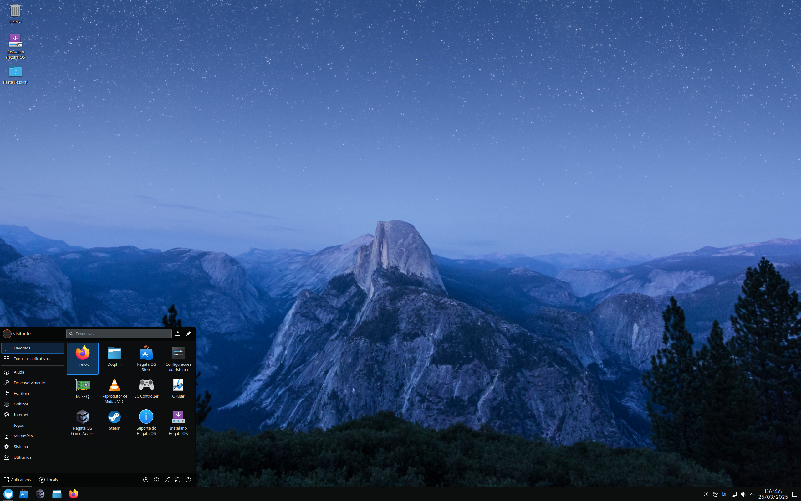
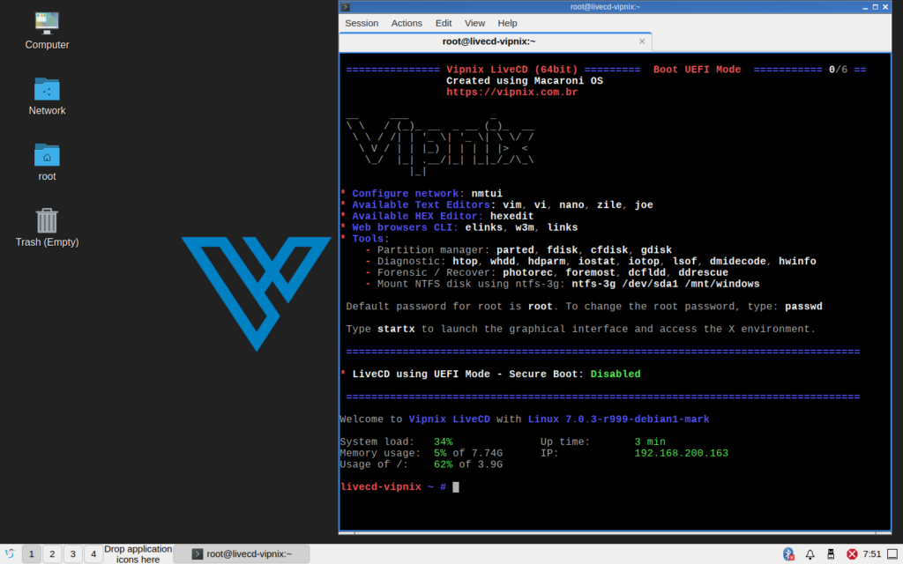
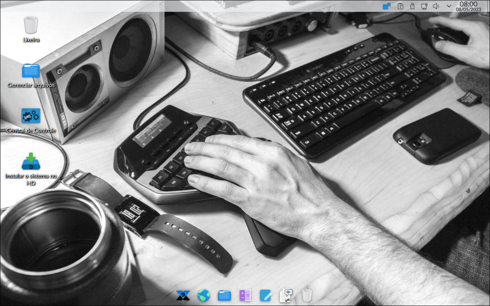

BigLinux
BigLinux é uma distribuição Linux brasileira gratuita e de código aberto criada e mantida por Bruno Gonçalves[1]. A primeira versão foi lançada em 19 de agosto de 2004, inicialmente baseada na distribuição Kubuntu e utilizando o gerenciador de pacotes DEB. Em 2017, o projeto passa por grandes atualizações, alterando o ambiente desktop padrão do KDE para Deepin.[2] Em 2022 o projeto passa por uma nova atualização, passando a utilizar os gerenciadores de pacote Pacman e Flatpak e o ambiente de desktop KDE Plasma, se aproximando muito da distribuição Manjaro.

Por Bruno Gonçalves Araujo - Free software screenshot, GPL, Hiperligação
Br OS
Br OS é uma distribuição brasileira Linux baseada no Debian e que possui a área de trabalho KDE Plasma. Ele foi projetado como um sistema operacional intuitivo, fácil de usar e de uso geral para navegação web e criação de conteúdo, oferecendo uma seleção de aplicações úteis para uso diário.
Seu principal foco é inclusão digital.

TigerOS
O TigerOS é voltado às empresas que necessitam de um sistema operacional leve, simples, estável e que reduza ao máximo a possibilidade de infecção de vírus, spyware e as mais variadas pragas virtuais.

Regata OS
Regata OS é uma distribuição Linux brasileira baseada no openSUSE, focada em necessidades de desktop e jogos. Suas principais características incluem uma loja Regata OS para instalar aplicativos e jogos, integração pronta para uso com o Google Drive, suporte a modo de jogo via Vulkan graphics API, uma extensa biblioteca de jogos no portal Regata OS Game Access, suporte para configuração de gráficos híbridos em notebooks e fácil transferência de arquivos entre um computador e um smartphone. A interface do usuário da distribuição é KDE Plasma.

Vipnix LiveCD
Vipnix LiveCD é uma distribuição portátil para Linux construída sobre o legado do Gentoo Linux, Funtoo e Macaroni OS. Ele combina a otimização baseada em código-fonte da Gentoo, as ferramentas inovadoras da Funtoo e a abordagem moderna e amigável aos contêineres do Macaroni OS. O Vipnix integra o ambiente de desktop leve LXQt e o servidor educacional XLibre X11 em um sistema operacional ao vivo projetado para entusiastas, profissionais e tarefas de recuperação de sistemas. Ele é desenvolvido pela Vipnix, uma empresa brasileira de soluções de TI especializada em infraestrutura personalizada, cibersegurança, proteção de dados e biotecnologia.

XIVA Studio
O XIVA Studio é uma custom GNU/Linux que tem como principal objetivo atender às demandas de profissionais das áreas de Vídeo, Áudio, Produção Gráfica, Animação e multimídia em geral. Desenvolvida com base no BigLinux Manjaro, essa customização traz consigo uma ampla variedade de softwares livres, que são os principais destaques em suas respectivas áreas.
Em resumo, o XIVA Studio é uma excelente opção para profissionais e amantes da área de multimídia que buscam uma solução GNU/Linux moderna, completa e gratuita para suas produções. Com uma interface amigável, recursos avançados e softwares poderosos, essa custom se destaca como uma das principais opções para quem deseja trabalhar com produção de conteúdos multimídias.
